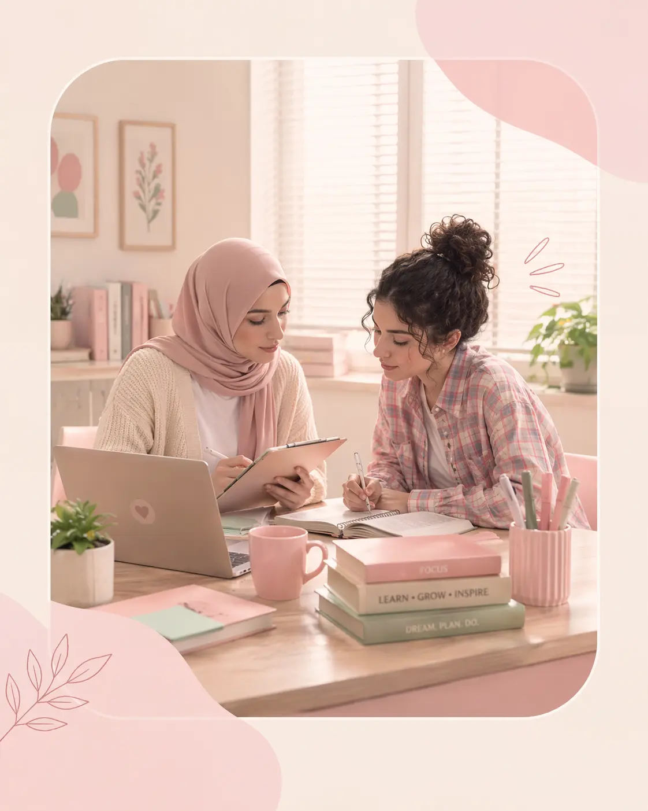
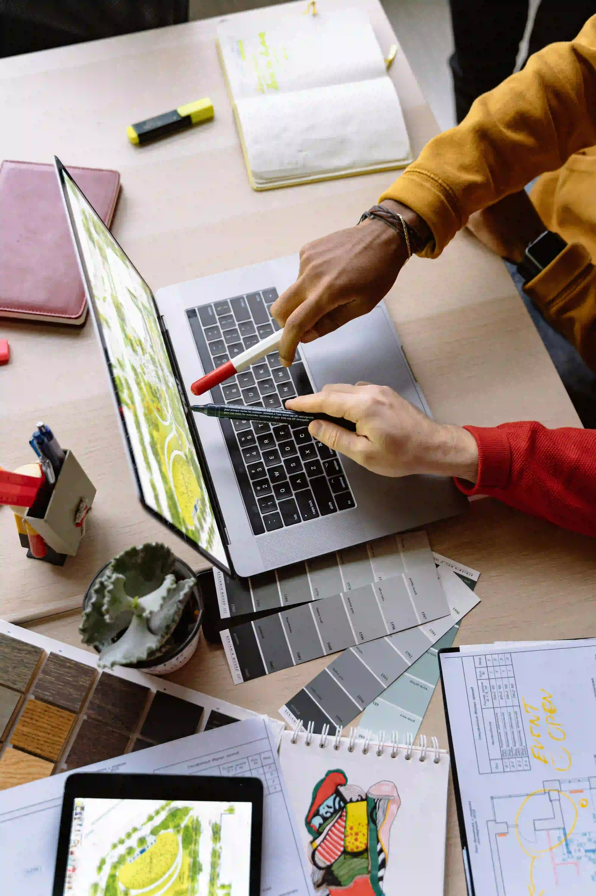
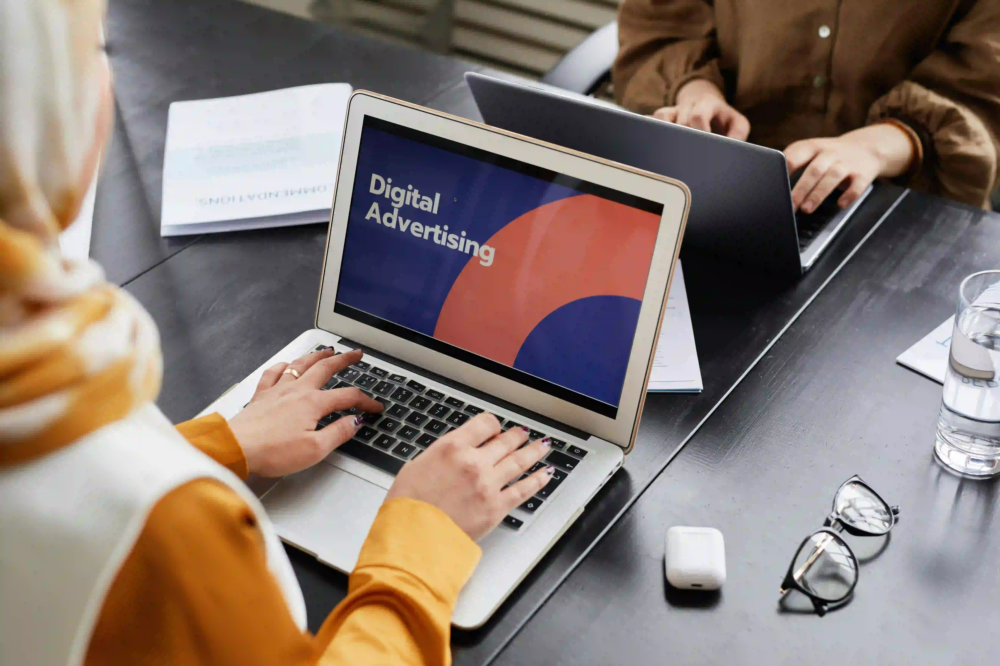
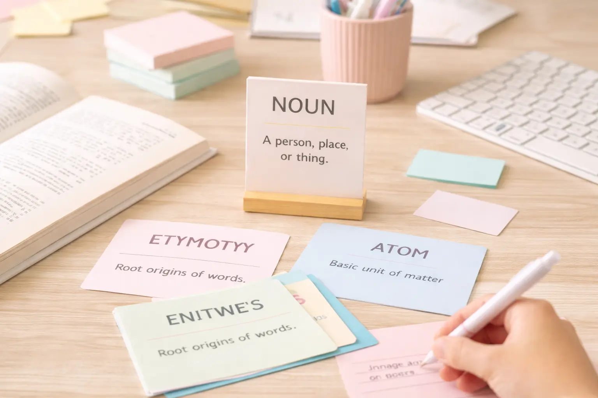
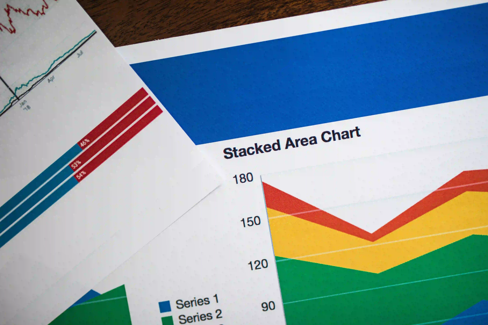
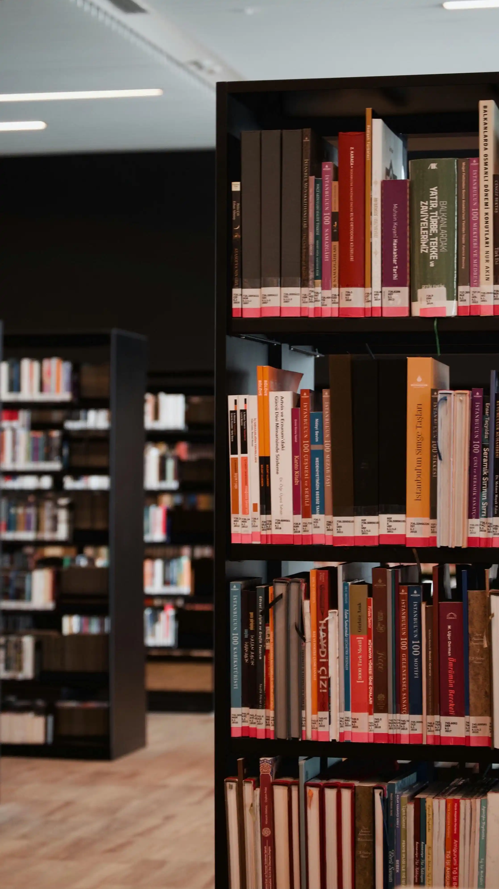

حلول أكاديمية راقية
نحوّل الأفكار الأكاديمية المعقدة إلى محتوى منظم سهل الفهم والتقديم.
نساعدك في إنجاز أبحاثك ورسائل الماجستير والدكتوراه بجودة أكاديمية عالية ومعايير بحث علمي دقيقة. نقدم دعمًا متكاملاً للطلاب والباحثين في مصر والسعودية والكويت، يشمل كتابة الأبحاث العلمية، وتصيغ وتحديد الفجوة البحثية، مع توفير الوقت والجهد وتوثيق المراجع بنظام APA لضمان تصدر نتائج التقييم الأكاديمي.

نحوّل الأفكار الأكاديمية المعقدة إلى محتوى منظم سهل الفهم والتقديم.
إعادة صياغة بشرية متخصصة لتقليل التشابه وتجاوز الذكاء الاصطناعي.
نعمل على تقديم تجربة متوازنة تجمع بين جودة المحتوى العلمي، سلامة المنهجية البحثية، والالتزام بمعايير الجامعات في مصر والسعودية والكويت.

نحن في Rasheed Research Hub فريق متخصص في تقديم خدمات البحث العلمي المساندة وإعداد الرسائل الجامعية للطلاب والباحثين في كافة المراحل التعليمية؛ بداية من إعداد أبحاث التخرج وحتى كتابة رسائل الماجستير والدكتوراه والدراسات العليا.
نراعي دقة الخطوات البحثية بدءاً من اختيار موضوع البحث، مروراً بصياغة الفجوة البحثية وخطة البحث (البروبوزال)، وتوثيق المراجع بنظام APA بواسطة Mendeley، وحتى فحص وتقليل نسبة الاقتباس على برنامج Turnitin.
ولأننا ندرك أهمية تطوير العملية التعليمية، نوفر أيضًا خدمات تصميم الحقائب التدريبية الموجهة للمعلمين والمعلمات وأساتذة الجامعات، بما يساعدهم على تقديم محتوى تعليمي أكثر تفاعلًا وتأثيرًا.
نقدم خدمة كتابة الأبحاث العلمية ورسائل الماجستير والدكتوراه بأسلوب أكاديمي احترافي وفق منهجية البحث العلمي المعتمدة، مع الالتزام بدليل الجامعة وصياغة الفجوة البحثية بوضوح.

تصميم مطويات توعوية وأكاديمية بأسلوب مريح بصرياً ومترابط المحتوى يجمع بين البساطة والوضوح لضمان إيصال الأفكار التوعوية والتعليمية بفاعلية.
إعادة صياغة النصوص والأبحاث بطريقة أكاديمية احترافية لتقليل نسبة الاقتباس وتجاوز تقارير Turnitin والذكاء الاصطناعي مع الحفاظ التام على مضمون الفكرة.

تصميم عروض مناقشة الأبحاث والرسائل العلمية بطريقة بصرية جذابة تجمع بين الجاذبية وسهولة العرض لتوصيل النتائج والتوصيات بشكل واضح.
إعداد حقائب تدريبية متكاملة للمعلمين وأساتذة الجامعة تشمل دليل المدرب، المتدرب، الأنشطة، وطرق التقييم بطريقة منهجية حديثة.

تلخيص المقررات وتصميم بطاقات استذكار Flash Cards تفاعلية تساعد الطلاب على المراجعة السريعة وتثبيت المفاهيم الأكاديمية بسهولة.

تحويل البيانات والدراسات المعقدة إلى تصاميم إنفوجرافيك تعليمية بصرية جذابة تساهم في تبسيط نتائج الأبحاث والمعلومات العلمية.

إدارة المصادر والمراجع الأكاديمية باستخدام برنامج Mendeley وتوثيقها وفق شروط الهيئات البحثية والأنماط المعتمدة مثل APA و MLA بشكل دقيق.
تعرف على تفاصيل التنسيق، الأسعار، أدوات الاقتباس، وطريقة طلب الخدمات بكل شفافية.
يمكنك إرسال دليل التنسيق أو تعليمات الجامعة، بالإضافة إلى الملف المطلوب مراجعته، حتى نحدد إمكانية تنسيق العناوين والفقرات والجداول والأشكال والمراجع وفقًا للتعليمات المحددة.
يبدأ ذلك بمراجعة تقرير التشابه، وتحديد المقاطع التي تحتاج إلى معالجة، وإعادة صياغة الأفكار بأسلوب علمي سليم عند الحاجة، مع توثيق المصادر بصورة صحيحة. ولا يعني انخفاض نسبة التشابه وحده أن البحث خال من مشكلات الاقتباس أو التوثيق.
لا يمكن ضمان نسبة تشابه محددة دون معرفة محتوى الملف ومعايير التقييم. تختلف النتائج بحسب النص والمراجع ومتطلبات المؤسسة التعليمية. ويمكن مناقشة مراجعة التشابه وتحسين التوثيق والصياغة قبل الاتفاق على نطاق الخدمة.
نعم، نقدم خدمة توثيق وتنظيم المراجع باستخدام أنماط التوثيق الأكاديمية المناسبة، مثل APA و MLA وغيرها، وفقًا للخدمة المطلوبة وتعليمات الجامعة. يُفضّل إرسال دليل التوثيق المعتمد للتأكد من تطبيق الإصدار الصحيح.
نقدم خدمة توثيق المصادر وإدارة المراجع باستخدام Mendeley، بما يساعد على تنظيم المراجع والاستشهادات داخل النص وقائمة المراجع وفقًا لنمط التوثيق المطلوب.
نعم نقدم خدمات تصميم العروض التقديمية الأكاديمية مع تنظيم المحتوى وتنسيق الشرائح وتحسين وضوح المعلومات بصريًا، بما يتناسب مع موضوع العرض ومتطلبات التقديم.
يمكنك التواصل معنا من السعودية أو الكويت أو أي دولة أخرى للاستفسار عن الخدمات المتاحة وإرسال تفاصيل الطلب إلكترونيًا، مع تأكيد إمكانية التنفيذ وفقا لنوع الخدمة.
لو مش متأكد من الخدمة المناسبة، ابعت لنا تفاصيل المطلوب وتعليمات الجامعة والملفات المرتبطة به هنراجع احتياجك ونوضح لك الخدمة المناسبة ونطاقها قبل الاتفاق، حتى ما تدفعش مقابل خدمة مش محتاجها.
يتم تحديد السعر حسب نوع الخدمة، وحجم العمل، ومتطلبات الجامعة، والموعد النهائي. أرسل تفاصيل طلبك للحصول على عرض سعر واضح قبل البدء، مع توضيح أي تكاليف إضافية إن وجدت.
تعتمد مدة التنفيذ على حجم العمل وتعقيده والموعد المطلوب. بعد مراجعة التفاصيل، نوضح لك المدة المتوقعة قبل تأكيد الطلب. وإذا كان موعد التسليم قريبا، اذكر ذلك من البداية حتى نتحقق من إمكانية التنفيذ في الوقت المتاح.
لتحديد التكلفة والمدة بدقة، أرسل وصف المطلوب، وتعليمات الجامعة أو الدكتور، وعدد الصفحات أو الشرائح إن وجد، والتخصص، والموعد النهائي. كلما كانت التفاصيل أوضح، كان تقدير نطاق العمل أدق.
يمكنك التواصل معنا من السعودية أو دول الخليج للاستفسار عن إمكانية تنفيذ طلبك عن بعد. أرسل تفاصيل الخدمة والموعد المطلوب، وسنوضح لك إمكانية التنفيذ والتكلفة وطريقة التسليم قبل التأكيد.
نعم عرض السعر مجاني. تُحدد التكلفة بناءً على نوع الخدمة وحجم العمل والتفاصيل المطلوبة والموعد النهائي. أرسل لنا متطلباتك للحصول على عرض سعر واضح قبل تأكيد الطلب، دون التزام بالدفع مقابل عرض السعر نفسه.
يتم دفع قيمة الطلب كاملة مقدمًا بعد الاتفاق على الخدمة والتكلفة وموعد التسليم. نوضح لك تفاصيل الطلب والمبلغ المستحق قبل تأكيده، حتى تكون على دراية بما ستدفعه وما يشمله الاتفاق.
نعم، التعديلات مجانية إذا كانت ضمن نطاق الطلب الأصلي والمتطلبات التي تم الاتفاق عليها. أما التغييرات الجديدة أو إضافة مهام لم تكن ضمن الاتفاق، فقد تتطلب إعادة تقدير التكلفة والمدة بعد الرجوع إليك.
نبني كل خدمة على أساس أكاديمي منظم، مع عناية كبيرة بالتفاصيل، وسلاسة في التواصل، ولمسة بصرية مريحة.
محتوى علمي موثوق، منسق بعناية، ومتوافق مع متطلبات المؤسسات التعليمية والجامعات في مصر والخليج.
نلتزم بخطة زمنية واضحة تضمن تسليم أبحاثك ورسائلك في الوقت المحدد دون الإخلال بالجودة.
نحترم خصوصية العملاء والملفات العلمية ونتعامل معها بمهنية عالية وعدم مشاركتها نهائياً.
نقدم تقرير فحص الاقتباس لضمان سلامة البحث علمياً وخلوه من التشابه غير الأكاديمي.
نوفّر تواصلًا مرنًا وتعديلات مجانية ضمن نطاق العمل المعتمد حتى نصل معاً لأفضل نتيجة.
من الأبحاث الأكاديمية والرسائل إلى التصميم والتوثيق، نوفر باقة مرنة تناسب مختلف مجالات الدراسة.
نفخر بثقة عملائنا من الطلاب والباحثين والمعلمين، ونسعى دائمًا لتقديم تجربة احترافية تجمع بين الدقة الأكاديمية وسهولة التواصل والتنفيذ.
تصفح مقالاتنا التعليمية حول كيفية صياغة وتحديد الفجوة البحثية، ودليل كتابة البحث العلمي من الصفر، أو نصائح اختيار عنوان بحثي قوي.

تعلم كيفية كتابة بحث علمي من الصفر خطوة بخطوة، بداية من اختيار الموضوع والعنوان وحتى تنسيق البحث وتوثيق المصادر بنظام APA.
اقرأ المزيد
تعلّم كيف يوجّهك اختيار عنوان بحث واضح نحو بحث علمي أكثر تركيزًا، مع نصائح عملية تدعم كتابة أبحاث قوية وتمنحك مساعدة أكاديمية مبكرة.
اقرأ المزيد
تعرّف على معنى الفجوة البحثية وكيف تدعم بناء بحث علمي أكثر إقناعًا، مع شرح يربطها بخطوات كتابة أبحاث واضحة ويقدم مساعدة أكاديمية عملية.
اقرأ المزيدهل تمتلك مهارات كتابة الأبحاث الأكاديمية أو الترجمة والتدقيق اللغوي وترغب في العمل معنا؟
نحن نبحث دائمًا عن متخصصين متميزين لديهم شغف بالتعلم والتطوير للانضمام إلى فريقنا والمساهمة في تقديم خدمات عالية الجودة.
للتقديم، يرجى إرسال السيرة الذاتية ونماذج من أعمالك عبر الواتساب أو البريد الإلكتروني.
يمكنك التواصل معنا مباشرة عبر الواتساب أو إرسال تفاصيل طلبك من خلال النموذج التالي لتقدير التكلفة والمدة.
إذا كنت ترغب في استجابة سريعة ومباشرة، فالواتساب هو القناة الأنسب لطلب الخدمة أو إرسال تفاصيل مشروعك الأكاديمي.
تواصل عبر واتساب الآن